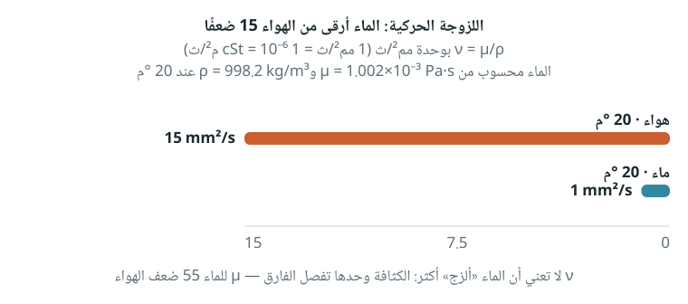

اللزوجة الحركية
Kinematic viscosity
اللزوجة الحركية ν هي اللزوجة الديناميكية مقسومة على الكثافة: ν = μ/ρ، ووحدتها m²/s. وهي التي تدخل في عدد رينولدز مباشرة، فتصف مقاومة المائع للجريان مع مراعاة ثقله. للماء عند 20 °C قيمتها نحو 1.00×10⁻⁶ m²/s، وللهواء نحو 1.5×10⁻⁵ m²/s.
اللزوجة الديناميكية μ تقيس مقاومة المائع للتشوّه بالقص، لكنها لا تكفي وحدها للحكم على الجريان: مائع لزج لكنه ثقيل قد يجري بسهولة أكبر من مائع أقل لزوجة وأخفّ. واللزوجة الحركية تجمع الأمرين بقسمة μ على ρ، فتصبح مقياس «الانتشار» الذي تنتشر به اضطرابات السرعة في المائع. ولهذا تدخل ν مباشرة في Re = u·L/ν. مثال: الماء عند 20 °C له μ = 1.002×10⁻³ Pa·s وρ = 998 kg/m³، فـν = 1.002×10⁻³/998 = 1.004×10⁻⁶ m²/s.
كيف تعمل الظاهرة؟
عندما يتحرك مائع فوق سطح تنتقل قوة القص بين طبقاته بتبادل الجزيئات بين الطبقات السريعة والبطيئة. ومقدار هذه القوة لكل وحدة مساحة يتناسب مع تدرّج السرعة، ومعامل التناسب هو μ. وعندما نقسم على الكثافة نحصل على كمية لها وحدة m²/s، وهي معامل الانتشار في معادلة الانتشار: ∂u/∂t = ν·∂²u/∂y². أي أن ν تصف كيف تنتشر اضطرابات السرعة في المائع بمرور الزمن، تماماً كما تصف الانتشارية الحرارية انتشار الحرارة.
العلاقة بالأرقام
ν = μ/ρ، وRe = u·L/ν. مثال: ماء في أنبوب قطره 0.050 m بسرعة 0.50 m/s: Re = 0.50×0.050/1.004×10⁻⁶ = 24900، أي جريان مضطرب. ولو كان المائع زيتاً بـν = 1.0×10⁻⁴ m²/s لكان Re = 250، أي جريان صفحي، مع السرعة والقطر نفسيهما. والانتقال من الصفحي إلى المضطرب في الأنابيب عند Re ≈ 2300.
مفاهيم متقاربة
يُفرَّق بين ν وμ: الأولى m²/s والثانية Pa·s، والفرق الكثافة. ويُفرَّق بين ν والانتشارية الحرارية α: كلتاهما m²/s لكن الأولى لكمية الحركة والثانية للحرارة، ونسبتهما Pr. ويُفرَّق بين ν واللزوجة الظاهرية في الموائع اللانيوتنية، حيث لا توجد لزوجة واحدة بل تعتمد على معدل القص. وأخيراً يُفرَّق بين ν في السائل وν في الغاز: الأولى تنقص بشدة مع الحرارة والثانية تزيد.
حدود التطبيق
ν لا تصف الموائع اللانيوتنية كالدم والبلاستيك المنصهر، حيث تعتمد اللزوجة على معدل القص. ولا تصف المعلّقات ذات الجزيئات الكبيرة حيث تصبح اللزوجة الفعّالة معتمدة على الحجم. ولا تصف الغاز المخلخل حيث يفشل افتراض الاستمرارية. ولا تصف الجريان في القنوات الشعرية حيث تظهر تأثيرات سطحية. وأخيراً لا تصف المائع قرب الحالة الحرجة حيث تتبدّل الكثافة بسرعة.

| الكمية | القيمة | المصدر |
|---|---|---|
| اللزوجة الحركية للماء عند 20 °C | 1.004×10⁻⁶ m²/s | [1] |
| اللزوجة الحركية للهواء عند 20 °C | 1.50×10⁻⁵ m²/s | [1] |
| اللزوجة الديناميكية للماء عند 20 °C | 1.002×10⁻³ Pa·s | [1] |
المصادر
- 1 Water - Dynamic and Kinematic Viscosity at Various Temperatures and Pressures — The Engineering ToolBox (2026). www.engineeringtoolbox.com/water-dynamic-kinematic-viscosity-d_596.html · اطُّلع عليه 2026-11-22
- 2 Air - Prandtl Number — The Engineering ToolBox (2026). www.engineeringtoolbox.com/air-prandtl-number-viscosity-heat-capacity-thermal-conductivity-d_2009.html · اطُّلع عليه 2026-11-22
استشهد بهذا المصطلح
الصيغتان مبنيتان من بيانات الصفحة نفسها: العنوان والتاريخ ورابط النسخة المنشورة.
اللزوجة الحركية — Kinematic viscosity. (2026). ديوان المعرفة — انفراد. https://infiradev.com/diwan/terms/term-kinematic-viscosity.html
@misc{term-kinematic-viscosity2026,
title = {اللزوجة الحركية},
titleaddon = {Kinematic viscosity},
howpublished = {{ديوان المعرفة — انفراد} — مرجع علمي عربي},
year = {2026},
url = {https://infiradev.com/diwan/terms/term-kinematic-viscosity.html},
urldate = {2026-11-22},
note = {مراجعة علمية: تحرير انفراد الآلي — نُشر بأمر عبدالله الهويدي}
}
راجعه: تحرير انفراد الآلي — نُشر بأمر عبدالله الهويدي · 2026-11-22 · آخر تحديث 2026-11-22